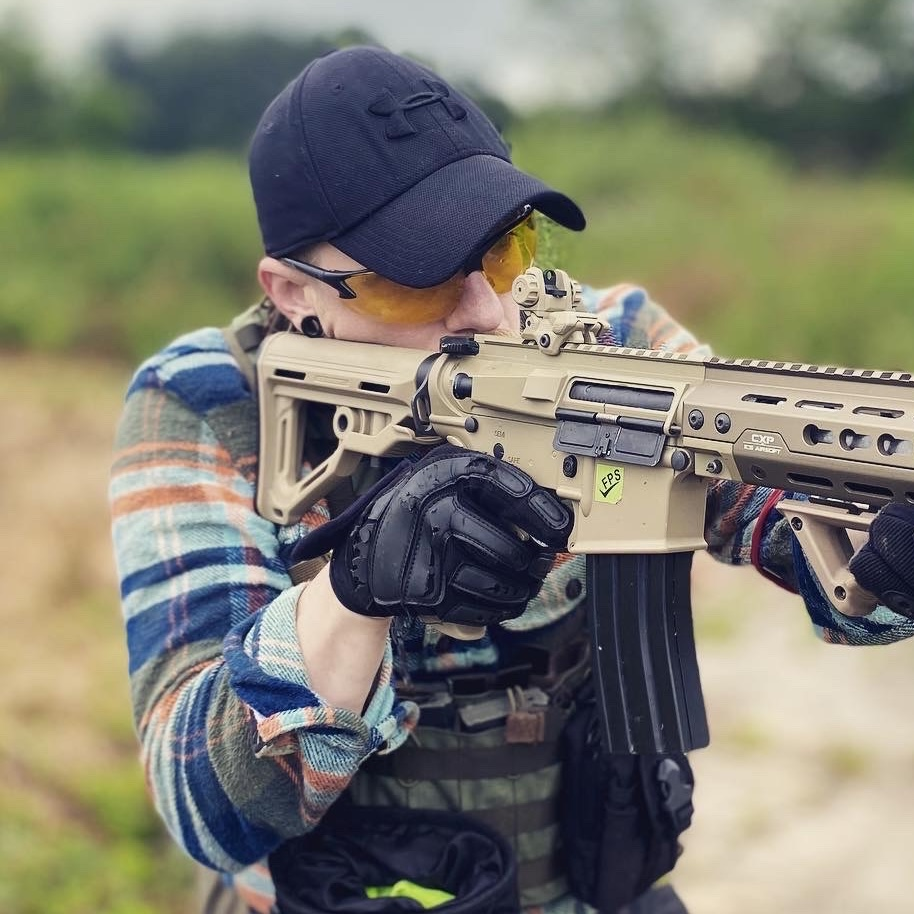
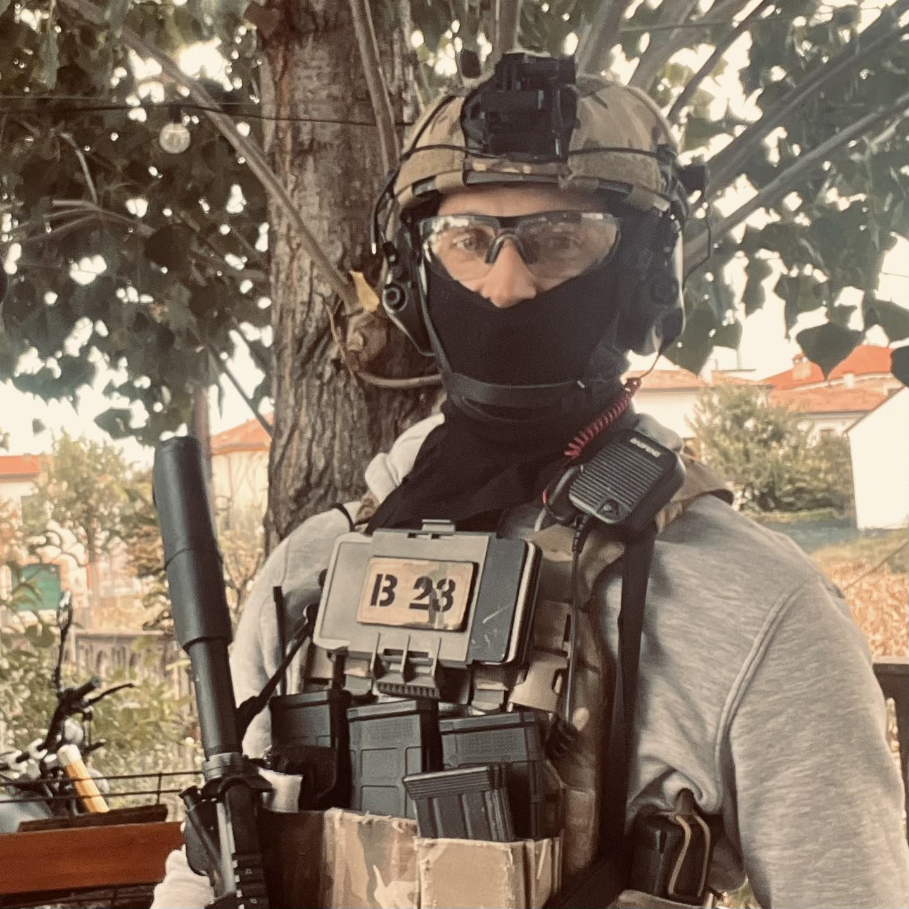

FieldUnit Systems
Tactical hardware designed for immersive airsoft experiences. Built for the field, tested in battle.
Tactical hardware designed for immersive airsoft experiences. Built for the field, tested in battle.
The Stimpack is a rugged, field-tested respawn system that cranks up the tension in every skirmish.
Designed for harsh environments and high-intensity gameplay, it lets you configure a set number of lives per player and enforces them with precision.
When a player is “down,” teammates must reach them and activate the Stimpack, triggering a dramatic revival sequence complete with LEDs and sound effects.
Each life spent is a strategic decision — do you risk pushing deeper, or fall back and regroup? As lives run out, the Stimpack delivers unmistakable alerts, signaling when a player is permanently out of the match.
This adds a whole new layer of urgency, teamwork, and consequence to your games.
Whether you’re running military-style simulations or casual weekend battles, the Stimpack transforms respawning into a core gameplay mechanic, not just a formality.
Take the thrill of tactical domination from your favorite video games straight into the field. The FieldUnit Zone Capture System is a rugged, wireless game controller suite built for immersive, objective-based airsoft battles.
Teams earn points every 10 seconds a zone is held, with bonus points for controlling multiple zones. When time runs out, the controller tallies scores and declares the victor in real time.
Built to be field-tough and intuitive, with visual and audio feedback to keep the action flowing. Whether you're organizing weekend games or competitive events, this system turns any skirmish into a strategic showdown.
FieldUnit Systems was born from a shared passion for tactical gaming and hands-on creativity. Founded by two longtime airsoft players and creators, our mission is to bring immersive, high-quality hardware to the battlefield.

Pavel is a veteran software developer, gamer, and airsoft enthusiast. He brings digital realism to the field by engineering the software and creating simulated circuit environments that power FieldUnit’s tactical systems. His deep knowledge of embedded logic and gameplay mechanics fuels the brains behind every device.

Jeffrey is a seasoned visual producer and dedicated airsoft player who brings our products to life — literally. From 3D-printing durable casings to hand-building each electronic unit, he ensures every component is field-ready. His eye for design and passion for immersive experiences define the look and feel of our gear.
Together, we blend code and craft to create rugged, purpose-built systems that elevate gameplay and withstand the realities of the field.
We're open to partnerships, events, and field testing. Reach out to learn more or request a demo.
Contact Us